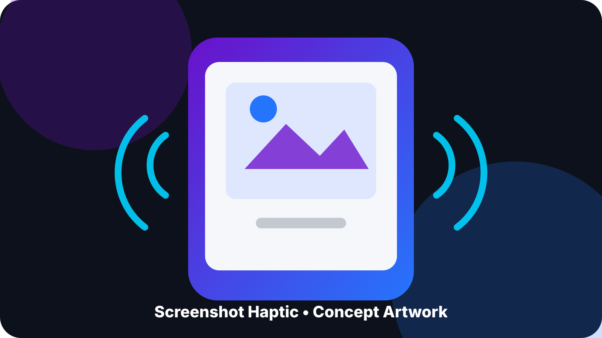
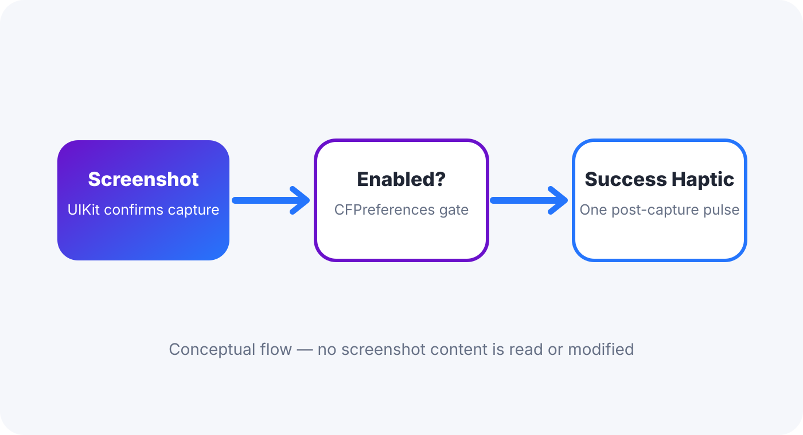

Screenshot Haptic 1.0.0
Add one success haptic after iOS confirms a screenshot. The tweak does not read, copy, upload, hide, delete or modify screenshot content.
Jailbreak required. This release is build-validated and published, but the runtime and preference pane still require physical-device confirmation. Artwork is conceptual and may differ from system visuals.

One focused feature
Confirmed screenshot feedback
After UIKit reports that a screenshot was taken, Screenshot Haptic produces one success haptic when enabled.
Simple Settings control
Settings contains one real option: Enable Screenshot Haptic. There are no diagnostic or test rows in the release pane.
Conservative runtime
The tweak targets SpringBoard only and uses Apple’s documented screenshot notification instead of an assumed private view lifecycle.
How it works

SpringBoard listens for UIApplicationUserDidTakeScreenshotNotification. The preference is read through CFPreferences; when the tweak is enabled, the post-capture callback requests a success haptic on the main queue.
Download Screenshot Haptic 1.0.0
Install only the package that matches your jailbreak environment.
Installation
- Add https://nextsolution.cc/ to Sileo and refresh sources.
- Search for Screenshot Haptic and confirm version 1.0.0.
- Install the RootHide or rootless package matching your environment.
- Allow the post-install respring.
- Open Settings → Screenshot Haptic and leave Enable Screenshot Haptic on.
If SpringBoard enters Safe Mode, remove Screenshot Haptic in Sileo and respring. Uninstalling does not affect saved screenshots.
Recommended first test
- Confirm the Settings pane opens and shows only the enable switch.
- Take one screenshot using Side + Volume Up and confirm exactly one added success haptic after capture.
- Take several separate screenshots and confirm one haptic per capture with no spontaneous feedback.
- Disable the tweak and take another screenshot; confirm the added haptic stops.
- Re-enable it and confirm a later screenshot again produces one haptic.
Known limitations
The callback occurs after UIKit reports the screenshot event, so it is not intended to match the exact instant of the hardware-button press. Physical behavior on the target iOS 16.0 RootHide device is not claimed verified until the test above is completed.
FAQ
Does this work on stock iOS?
No. Screenshot Haptic is a jailbreak tweak.
Which build should RootHide users install?
ScreenshotHaptic_1.0.0_RootHide.deb.
Which build should standard rootless users install?
ScreenshotHaptic_1.0.0_Rootless.deb.
What iOS versions are targeted?
iOS 15 and later, with iOS 16.0 as the primary target.
Does it access screenshot images?
No. It reacts to the system screenshot notification and does not inspect screenshot content or Photos data.
Does installation require a respring?
Yes. The package restarts SpringBoard and Preferences after installation.
How do I remove it?
Uninstall Screenshot Haptic in Sileo and respring.
Where can I report a problem?
Use the Next Solution project channels and include your iOS version, jailbreak environment and whether the Settings pane loaded.